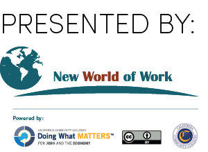

Enter values below to update message on right.
Click here to copy the message to your clipboard (where possible)
|
Greetings! Thanks to all of you who participated in the New World of Work 21st Century Skills Training hosted by {{ hostSite }}. If you haven't had the chance yet, please go ahead and fill out the Training Feedback form. On behalf of your hosts {{ hostSite }}, your trainers {{ trainerNames }}, and the entire New World of Work staff, we welcome you to the Community of Practice (CoP) for 21st Century Skills! We are also happy to welcome {{ collegePartners }} as an official partner college through your faculty/staff participation in this training. To be a partner, at least 2-3 faculty/staff from a given college need to attend a 21st Century Skills Training with plans to implement the curriculum. We host quarterly webinars with CoP and partner college members to make sure you have the most up to date information on data collection and lesson content, and to showcase the great work you all are doing. The branded photo from your training (attached) is already garnering praise through our NWoW social media sites this week. Congrats for being innovative leaders in contextualizing 21st Century Skills! We hosted our most recent webinar before your training. The relevant update for your group is a reminder to submit your Data Tracking form in order to access FREE LinkedIn Learning/Lynda.com codes for your students who are going through our 21st Century Skills coursework. The form takes no more than 5 minutes to complete, and can be accessed here. Once you submit the form, our data lead, William Ogle, will reach out to you for next steps. He can be reached directly at wogle@newworldofwork.org. For additional data collection, we have the Pre and Post Student/Employer Surveys for your use. Please see the attached guide. In addition, all of you who completed both days of the training should have received an email invite from LaunchPath to create an account and claim your Instructor Badge! For those who work with college students, adult learners, and/or workforce development clients, you will also be able to invite your learners to take 21st Century Skill digital badge assessments once you have taught both lessons of a given skill. If you have questions on badges, please reach out to the Statewide TAP for Employability Skills, Shannon Wells at: swells@shastacollege.edu. For those of you interested in utilizing the Keirsey Assessment with your learners, please fill out your request on Keirsey's ordering portal. You will want to indicate that you are part of the New World of Work program, which makes you eligible for our negotiated rate of $10 per assessment for orders of 30 or more assessments. You should also request the easier assessment language for the Career Reports. The Keirsey team will step you through the payment process and set you up with your own administrator's portal. http://www.keirsey.com/become_admin.aspx If you would like to use our branded PR for your program, please visit the ordering portal. You will be able to preview the options for flyers and brochures, see costs, and estimate delivery times based on your orders. If you have any questions or specific follow-up items, please contact me at rgill@newworldofwork.org. |
|  |